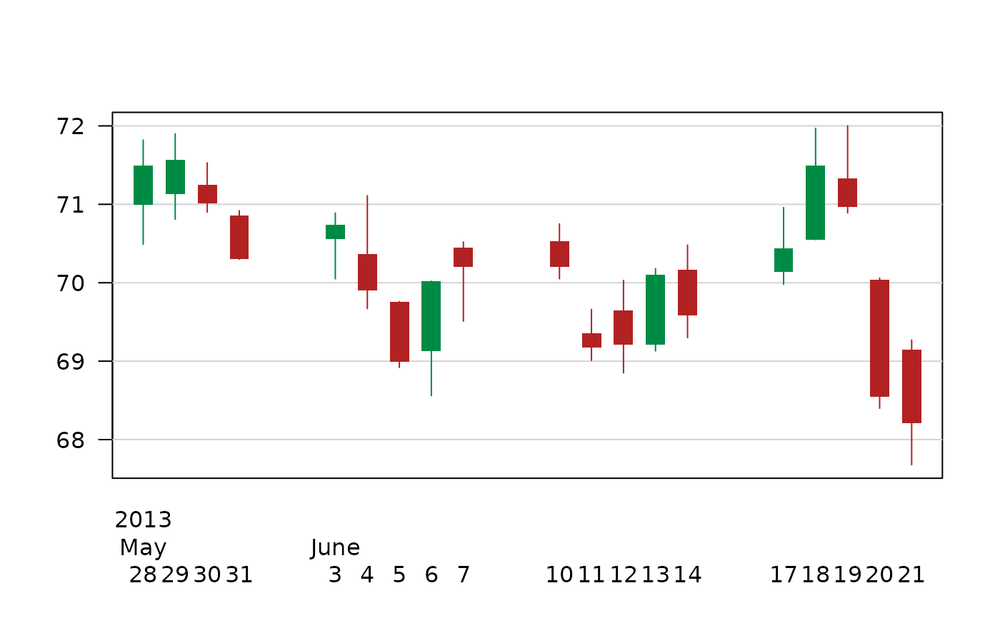
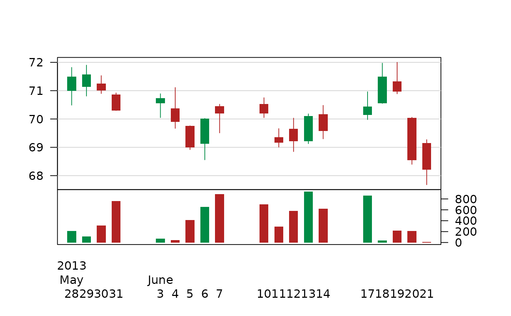

PlotCandlestick.RdPlot a candlestick chart. This is used primarily to describe price movements of a security, derivative, or currency over time. Candlestick charts are a visual aid for decision making in stock, foreign exchange, commodity, and option trading.
PlotCandlestick(x, y, vol = NA, xlim = NULL, ylim = NULL,
col = c("springgreen4","firebrick"),
border = NA, args.bar = NULL, args.grid = NULL, ...)a numeric vector for the x-values. Usually a date.
the y-values in a matrix (or a data.frame that can be coerced to a matrix) with 4 columns, whereas the first column contains the open price, the second the high, the third the lowest and the 4th the close price of daily stock prices.
the volume, if it should be included in the plot as separate part.
the x limits (x1, x2) of the plot. The default value, NULL, indicates that the range of the finite values to be plotted should be used.
the y limits of the plot.
color for the body. To better highlight price movements, modern candlestick charts often replace the black or white of the candlestick body with colors such as red for a lower closing and blue or green for a higher closing.
the border color of the rectangles. Default is NA, meaning no border will be plotted.
the arguments of a potential grid. Default is NULL, which will have a grid plotted. If arguments are provided, they
have to be organized as list with the names of the arguments. (For example: ..., args.grid = list(col="red"))
optional additional arguments for the volume barplot.
the dots are passed to plot() command
Candlesticks are usually composed of the body (black or white), and an upper and a lower shadow (wick): the area between the open and the close is called the real body, price excursions above and below the real body are called shadows. The wick illustrates the highest and lowest traded prices of a security during the time interval represented. The body illustrates the opening and closing trades. If the security closed higher than it opened, the body is white or unfilled, with the opening price at the bottom of the body and the closing price at the top. If the security closed lower than it opened, the body is black, with the opening price at the top and the closing price at the bottom. A candlestick need not have either a body or a wick.
nov <- rbind(
"2013-05-28"= c(70.99,71.82,70.49,71.49),
"2013-05-29"= c(71.13,71.90,70.81,71.57),
"2013-05-30"= c(71.25,71.53,70.90,71.01),
"2013-05-31"= c(70.86,70.92,70.30,70.30),
"2013-06-03"= c(70.56,70.89,70.05,70.74),
"2013-06-04"= c(70.37,71.11,69.67,69.90),
"2013-06-05"= c(69.76,69.76,68.92,68.99),
"2013-06-06"= c(69.13,70.02,68.56,70.02),
"2013-06-07"= c(70.45,70.52,69.51,70.20),
"2013-06-10"= c(70.53,70.75,70.05,70.20),
"2013-06-11"= c(69.36,69.66,69.01,69.17),
"2013-06-12"= c(69.65,70.03,68.85,69.21),
"2013-06-13"= c(69.21,70.18,69.13,70.10),
"2013-06-14"= c(70.17,70.48,69.30,69.58),
"2013-06-17"= c(70.14,70.96,69.98,70.44),
"2013-06-18"= c(70.55,71.97,70.55,71.49),
"2013-06-19"= c(71.33,72.00,70.89,70.97),
"2013-06-20"= c(70.04,70.06,68.40,68.55),
"2013-06-21"= c(69.15,69.27,67.68,68.21)
)
colnames(nov) <- c("open","high","low","close")
PlotCandlestick(x=as.Date(rownames(nov)), y=nov, border=NA, las=1, ylab="")

# include some volume information
v <- c(213,108,310,762,70,46,411,652,887,704,289,579,934,619,860,35,215,211,8)
PlotCandlestick(x=as.Date(rownames(nov)), y=nov, vol=v,
border=NA, las=1, ylab="")
